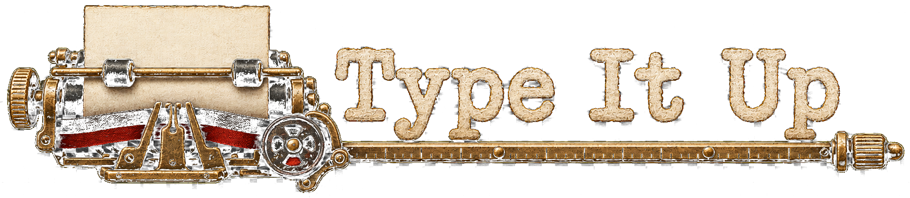
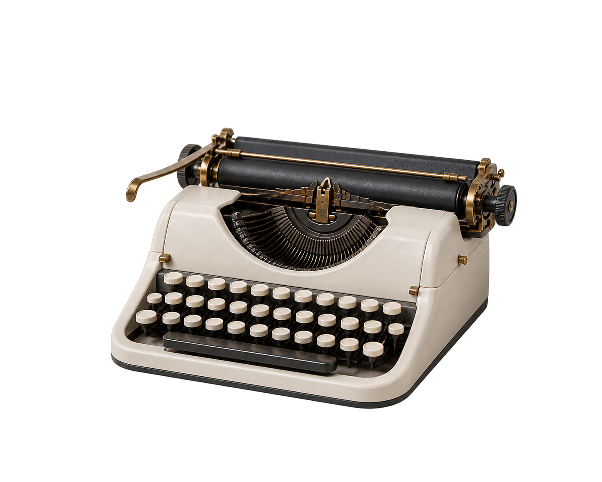

{{ savedLabel }}
B
U
↺
↻
{{ focusBadge }}
{{ fsLabel }}
Export
⤡ Exit full screen
PAGES
{{ t.num }}
⧉
🗑
+
{{ s.ch }}
{{ previewCap }}
COL {{ col }}
▸
{{ s.ch }}
{{ s.ch }}
— {{ pageNum }} —
Cut
Copy
Paste
Whiteout
{{ railChevron }}
Tools
{{ t.name }}
{{ t.icon }}
{{ t.name }}
{{ t.caret }}
Auto return
Return to the left margin at the bell.
{{ n.name }}
{{ nibSizeName }}
{{ nibSizeLabel }}
Intensity
{{ markLabel }}
Apply to selection
Delete key does the same thing.
Paper age
{{ age }}
Paper wear
{{ wear }}
Ink condition
{{ inkLabel }}
Machine wear
{{ mwear }}
RIBBON
{{ inkName }}
PAPER SIZE
{{ z.name }}
↻ Regenerate wear
Seed {{ seedLabel }}
Show rulers
Show page rail
Open tools on launch
Typewriter sounds
{{ soundLabel }}
DEFAULT PAPER SIZE
{{ z.name }}
Reset to defaults
Saved in this browser.
?
Help & shortcuts
{{ bellText }}
{{ pitchLabel }}
LINE {{ line }} · COL {{ col }}
{{ autoReturnLabel }}
{{ modeLabel }}
{{ pageLabel }}
TYPE IT UP
Help & shortcuts
A practical guide to the typewriter workspace.
×
SEARCH HELP
Clear
{{ helpSearchStatus }}
SECTIONS
{{ h.label }}
No topics match that search.
{{ helpContentLabel }}
{{ helpContentTitle }}
{{ helpContentIntro }}
{{ g.heading }}
{{ i.label }}
{{ i.text }}
No help topics found
Try a broader search such as “typing”, “paper”, “save”, or “shortcut”.
Reference only · your document stays unchanged
ESC to close
TYPE IT UP
Choose a machine
Office Standard
SELECTED
Handgloves 123
PICA · 10 characters per inch
Heavier, even imprint
Stable alignment
Firm key and return
Travel Portable
SELECTED
H
andglo
v
es
123
ELITE · 12 characters per inch
Lighter imprint, some dropout
Baseline drifts
Small, sharp mechanics

PAPER
{{ z.name }}
CONDITION
Fresh sheet
Aged
Well used
Roll in a sheet
Keep the current page
Click the page once to start typing
{{ s.ch }}
— {{ pg.num }} —